Krümelbahn
KrümelbahnDCC-Decodereinbauten
Wie finde ich den richtigen Decoder für mein Fahrzeug?
-
Es gibt einige Auswahlkriterien, hier die wichtigsten:
- Ist ein Schnittstellenstecker vorhanden? (entscheidend für die Steckerwahl)
- Welcher Einbauplatz steht zur Verfügung? (entscheidend für die Decodergröße)
- Welche (Sonder-)Funktionen werden benötigt?
- Wie groß ist der maximale Motordauerstrom?
Messverfahren: das Fahrzeug vor dem Umbau auf ein Testgleis stellen und bei maximaler Fahrspannung vor einen Prellbock fahren lassen, die Räder drehen dann durch. Der jetzt gemessene Strom ist ein guter Richtwert für den maximalen Dauerstrom.
Doch Vorsicht: man kennt jetzt zwar einen Richtwert für den Dauerstrom, ein möglicher Spitzenstrom, der z.B. beim Anfahren auftreten kann, wird so nicht erfasst. Insbesonders ältere Motoren haben oftmals einen hohen Spitzenstrom. Hier gilt es, die Decoderanleitung genau zu lesen. - eine ausführliche Beschreibung zur Decoderauswahl gibt es z.B. bei Tams
allgemeine Hinweise und Erfahrungen
- Alle Angaben wurden nach bestem Wissen und Gewissen gemacht. Für eventuelle Fehler, Schäden, o.ä. bin ich nicht verantwortlich: jeder ist für sein eigenes Tun verantwortlich. Durch solche Eingriffe in die Fahrzeuge erlischt i.d.R. jegliche Gewährleistung des Herstellers.
- Ein Hinweis zum Thema Fahrzeugbeleuchtung:
Ins besonders bei älteren Fahrzeuge ist das Leuchtmittel eine kleine Glühlampe, angepasst für die analoge Fahrspannung.
Im Digitalsystem ist die effektive Digitalspannung höher als die analoge Fahrspannung,- die Glühlampe bekommt eine höhere Spannung,
- leuchtet somit heller
- - wird aber auch heißer!
Hier ist es in den meisten Fällen besser, die vorhandenen Glühlampen gegen eine entsprechende LED mit Vorwiderstand auszutauschen. LED-Bauformen gibt es mehr als genug... -
Vermutlich im Zusammenspiel mit dem Kehrschleifenmodul kam es dazu, das sporadisch Triebfahrzeuge mit Decodern, die auch für Analogbetrieb geeignet sind, 'unmotiviert' und unkontrolliert mit voller Geschwindigkeit anfuhren. Dies konnte nur durch Zuweisen des Fahrzeugs zu einem Fahrregler (FRED) behoben werden.
Abhilfe kann schaffen:- das Deaktivieren des Analogbetriebes: bei Lenz-Decodern heißt dies: CV29 Bit 2 auf 0 (Null) setzen. (Achtung: Lenz zählt die Bits von 1 bis 8, ich zähle wie die meisten Hersteller von 0 bis 7!)
- das Einteilen der Anlage in kleinere Booster/Versorgungsabschnitte: manche Decoder reagieren eigenwillig auf unsaubere Signale...(insbesondere bei zu dünnen Fahrspannungsversorgungsdrähten)
- Vorbildgerechte wechselnde Stirn/Schlußbeleuchtung
Nicht alle Decoder (hier besonders ältere Decoder) unterstützen eine vorbildgerechte Lichtsteuerung, so ist beispielsweise das beidseitige Spitzensignal beim Rangieren nicht schaltbar.
Auf eine notwendige (Um)verdrahtung bin ich durch einen Artikel in der Fremo-Zeitschrift Hp1 (Heft 3-1999) gestossen.
Die entsprechende Ansteuerung habe ich so bei einigen meiner Triebfahrzeuge genutzt.
Tatsächlich ist dieser Umbauvorschlag bei modernen Decodern hinfällig, hier kann das gewünschte Verhalten mit CV-Einstellungen und ohne Umverdrahtungen erreicht werden.
Übersicht
Noch eine Seite mit Einbauanleitungen?Gibt es derer nicht schon genug?
Ich meine: es kann nicht genug geben!
Deshalb hier eine Übersicht über meine Decodereinbauten - die entweder völlig neu sind oder sich an bereits bestehenden Umbauanleitungen anlehnen.
(Übrigens: eine Übersicht meiner digitalisierten Fahrzeuge gibt es auch hier: )
| TamsTams | KuehnKuehn | LenzLenz | ESUESU | Uhlen- brockUhlen- brock |
Rauten- hausRauten- haus |
ZimoZimo | |||||||||||||
|---|---|---|---|---|---|---|---|---|---|---|---|---|---|---|---|---|---|---|---|
| LD-G-7 | LD-G-8 | FD-R Basic.3 |
N025 | N045 | T65 | T125 | LH10 | LE 0511D |
LE 1014E |
LE 1035A |
LE 1835A |
Gold mini |
Lok Pilot 3 | Lok Sound 4 | 76320 | SLX871 | MX617 | ||
 BR 01.5BR 01.5 BR 01.5BR 01.5 |
X | ||||||||||||||||||
| wü C (BR 18.1)wü C (BR 18.1) |
X | ||||||||||||||||||
| pr. P8 (BR 38.10)pr. P8 (BR 38.10) |
X | ||||||||||||||||||
| BR 41ÖlBR 41Öl |
X | ||||||||||||||||||
| BR 50KabBR 50Kab |
X | ||||||||||||||||||
| wü Hh (BR 57.4)wü Hh (BR 57.4) |
X | ||||||||||||||||||
| wü G12 (BR 58.5)wü G12 (BR 58.5) |
X | ||||||||||||||||||
| wü K (BR 59)wü K (BR 59) |
X | ||||||||||||||||||
| wü T5 (BR 75.0)wü T5 (BR 75.0) |
X | ||||||||||||||||||
| wü T3 (BR 89.3-4)wü T3 (BR 89.3-4) |
X | ||||||||||||||||||
| T3 (BR 89.70)T3 (BR 89.70) |
X | ||||||||||||||||||
| wü Tn (BR 94.1)wü Tn (BR 94.1) |
X | ||||||||||||||||||
| V36.4V36.4 |
X | ||||||||||||||||||
| V60V60 |
X | ||||||||||||||||||
| V100.10V100.10 |
X | ||||||||||||||||||
| V188V188 |
X | ||||||||||||||||||
| V200V200 |
X | ||||||||||||||||||
| Köf IIKöf II |
X | ||||||||||||||||||
| Klv 12Klv 12 |
X | ||||||||||||||||||
| Klv 20Klv 20 |
X | ||||||||||||||||||
| Klv 51Klv 51 |
X | ||||||||||||||||||
| Klv 60Klv 60 |
X | ||||||||||||||||||
| ASF 1ASF 1 |
X | ||||||||||||||||||
| DH500CaDH500Ca |
X | ||||||||||||||||||
| ETA 150ETA 150 |
X | X | |||||||||||||||||
| ETA 180ETA 180 |
X | X | |||||||||||||||||
| DW8 (Kittel, gn)DW8 (Kittel, gn) |
X | ||||||||||||||||||
| DW8 (Kittel, bn)DW8 (Kittel, bn) |
X | ||||||||||||||||||
| SVT877SVT877 |
X | ||||||||||||||||||
| VT70.9VT70.9 |
X | ||||||||||||||||||
| VT95.9 VB140.7VT95.9 VB140.7 |
X | ||||||||||||||||||
| VT137 240VT137 240 |
X | ||||||||||||||||||
| Schiene- Straße- BusSchiene- Straße-Bus |
X | ||||||||||||||||||
| VB147.0 VB147.0 |
|||||||||||||||||||
| VS145.1VS145.1 |
X | ||||||||||||||||||
| BN 2267BN 2267 |
X | ||||||||||||||||||
| 4-achs. Umbauwagen4-achsige Umbauwagen |
X | ||||||||||||||||||
| 4-achs. n-Wagen BDnf7384-achsige n-Wagen |
X | ||||||||||||||||||
| 4-achs. n-Wagen Bnrzb7254-achsige n-Wagen |
X | ||||||||||||||||||
BR 01.5
Fahrzeug: 01 1518-8, Piko #5/6325, DC=, ohne Schnittstellenstecker
Decoder: Kuehn N045
Umbaubeschreibung
- Hierzu gibt es einen Infoletter
Vorbildinformationen

wü C (BR 18.1)
Fahrzeug: 2025, Roco #43216, DC=, ohne Schnittstellenstecker
Decoder: Lenz LE1014E
Umbaubeschreibung
- Beim Umbau meiner wü C habe ich mich an die Anleitung von Hans-Peter Pfeiffer gehalten.
Vorbildinformationen
- Thomas Scherer: Die Baureihe 181 Die »Schöne Württembergerin«, Eisenbahn-Kurier Verlag 1986
- Albert Gieseler
pr. P8 (BR38.10)
Fahrzeug: 38 3440, Fleischmann #4165, DC=, ohne Schnittstellenstecker
Decoder: Tams LD-G-8
Umbaubeschreibung
- Inspiriert wurde ich durch den Umbau, den Andreas Nothaft (s.u.) auf seiner Homepage beschreibt.
- Umbau der insgesamt drei
 LeiterplattenLeiterplatten
LeiterplattenLeiterplatten
- Anschluß und AufbauAnschluß und Aufbau

des Decoders im Bereich der Feuerbüchse.
Die im Bild gezeigte PVC-Platte hält den Decoder nach dem Einbau auf Abstand zum Kesselballastgewicht.
Die Glühlampe wird von Masse getrennt. Dazu muß die Lampenhalterung vorne aufgefeilt werden, damit die (Silikonschlauch) isolierte Glühlampe weiterhin Platz findet. - Durch den Kabelschacht (siehe auf der Homepage von H.P.Pfeiffer, s.u.) kommen nun ein gelbes, ein blaues, ein graues und ein oranges Kabel. Der Tender wird weiterhin zur Stromabnahme verwendet, dazu dienen die beiden Kabel in der schwarzen Tenderkupplung.
- Damit die vier neuen Kabel dann auch in den Tender gelangen können, sind kleine Fräsarbeiten erforderlich.Fräsarbeiten erforderlich

- Auch im Tender wird die Glühlampe isoliert. Dazu muß dann das Halteloch aufgebohrt werden und neu angesenkt werden, damit der an die Lampr neu anzulötende (blaue) Draht nicht die Masse berührt.
- Der Anschluß der Kabel im Tender wird hieroben gezeigt, wenn die Leiterplatten wieder montiert sind, sollte alles so aussehen.so aussehen:

;){kind=link}
;){kind=link}
;){kind=link}
;){kind=link}
weitere Umbaumöglichkeiten:
- Inzwischen habe ich meiner pr. P8 sowohl eine Triebwerks- als auch eine Führerstandsbeleuchtung gegönnt.
Verwendet wurden hierzu warm-weisse LED's der Baugröße 0603. - Anbau eines Vorsatzschneepflugs: https://www.bw-rheinbrueck.de
Dieser Umbau ist auch erschienen im Eisenbahnmagazin 03/07 (Seite 70): P8 im Schneeräum-Einsatz
Vorbildinformationen
- Hansjürgen Wenzel: Die preußische P8 - Die Baureihe 3810, Eisenbahn-Kurier Verlag 1994
- 100 Jahre Preußische P8, Eisenbahn-Kurier Spezial 80 (I/2006)
- Horst J. Obermayer, Manfred Weisbrod: Die P8 - Baureihe 3810-40, Eisenbahn-Journal Sonderausgabe IV/1995
- Albert Gieseler
siehe auch:
BR 41Öl
Fahrzeug: 41 360, Roco #43244, DC=, ohne Schnittstellenstecker
Decoder: Kuehn N045
Umbaubeschreibung
- Beim Umbau meiner BR41 habe ich mich an die Anleitung von Hans-Peter Pfeiffer (s.u.) gehalten.
Durch die Verwendung des kleinen Kuehn-Decoders waren Aussparungen am Tendergewicht nicht erforderlich, der Decoder wurde mit einem Klebepad auf den Motor geklebt. - Um auch die vordere Kupplung verwenden zu können, wurde der dem Modell beigelegte Kupplungsadapter an der Deichsel montiert. Leider liegt bei meinem Modell der NEM-Schacht zu tief, somit hängt auch die eingesetzte Kadee-Kupplung #18 zu tief! Abhilfe schafft hier der Roco-Kupplungsadapter 40396. Dieser hat eine Schwalbenschwanzführung. Eine Kadee-Kupplung #17 wird so zugeschnitten, dass sie in den Kupplungsadapter passt. Der Kupplungsadapter kann in der Höhe gestutzt werden, die Kadee-Kupplung selbst wird nach der Justage mit Sekundenkleber fixiert.
-
Montageskizze für die vordere Kupplung
Montageskizze für die vordere Kupplung:

;){kind=link}
Haftreifenwechsel am Tender
So einfach, wie es in der Bedienungsanleitung steht, ging es bei meiner 41 leider nicht:- die aktuelle Bestellnummer lautet 40069 (10 Stück, 6,90€, Stand 2022)
- Roco beschreibt, dass es genüge, die Drehgestellblenden abzuziehen
- ich habe es so nicht geschafft - sondern musste den Tender komplett zerlegen, um an die Achsen in den beiden Drehgestellen zu kommen. Erst nachdem die Achsen frei vor mir lagen, war es möglich, alle vier Haftreifen zu erneuern.
weitere Umbaumöglichkeiten:
- Inzwischen habe ich meiner 41 sowohl eine Triebwerks- als auch eine Führerstandsbeleuchtung gegönnt.
Verwendet wurden hierzu warm-weisse LED's der Baugröße 0603.
Vorbildinformationen
- Manfred Weisbrod, Horst Obermayer: Baureihe 41, Eisenbahn-Journal Sonderausgabe 12/1984
- Carl Asmus: Die Baureihe 042, Eisenbahn-Journal Sonderausgabe I/1989
- Albert Gieseler
BR 50Kab
Fahrzeug: 50 579 (ex 50 888), Roco #43306, DC=, ohne Schnittstellenstecker
Decoder: Kuehn N045
Umbaubeschreibung
- Beim Umbau meiner BR50 habe ich mich an die Anleitung von Hans-Peter Pfeiffer (s.u.) gehalten.
Da es in unserer Modulgruppe bereits eine (identische) Lok (nämlich mit der Nummer 50 888) gibt, habe ich meine 50 mit einem neuen Schildersatz von Kuswa versehen. - Um auch die vordere Kupplung verwenden zu können, wurde der dem Modell beigelegte Kupplungsadapter an der Deichsel montiert. Leider liegt bei meinem Modell der NEM-Schacht 1mm zu tief und ist nach unten geneigt. Nach dem Einsetzen der Kadee-Kupplung #18 hängt diese am Kupplungskopf 2mm zu tief! Abhilfe schafft hier der Roco-Kupplungsadapter 40396. Dieser hat eine Schwalbenschwanzführung. Eine Kadee-Kupplung #17 wird so zugeschnitten, dass sie in den Kupplungsadapter passt. Der Kupplungsadapter kann in der Höhe auf 3,5mm gestutzt werden, die Kadee-Kupplung selbst wird nach der Justage mit Sekundenkleber fixiert.
-
Montageskizze für die vordere Kupplung
Montageskizze für die vordere Kupplung:
weitere Umbaumöglichkeiten:
- Inzwischen habe ich die 50 579 sowohl mit einer Triebwerks- als auch einer Führerstands- sowie einer Kabinentenderbeleuchtung versehen.
Verwendet wurden hierzu warm-weisse LED's der Baugröße 0603, die mit Kupferlackdraht und Microsteckern am Decoder verdrahtet wurden.
Vorbildinformationen
- Jürgen U. Ebel, Hansjürgen Wenzel: Die Baureihe 50 - Band 1: Deutsche Reichsbahn, Eisenbahn-Kurier Verlag 2007
- Jürgen U. Ebel, Hansjürgen Wenzel: Die Baureihe 50 - Band 2: Deutsche Bundesbahn, Eisenbahn-Kurier Verlag 2007
- Ulf Heitmann, Peter Melcher, Egbert von Steuber: Die Lokomotiven der Baureihe 50 und ihr Verbleib, Lokrundschau Verlag 2008
- Albert Gieseler
- Eisenbahn-Magazin 4/2025 (Seite 10ff.): Lokomotivtender für die Dienstreise des Zugführers
siehe auch:
wü Hh (BR 57.4)
Fahrzeug: 824, Brawa #40154, DC=, Schnittstellenstecker nach NEM 660 (21MTC)
Decoder: ESU Lok Sound 4 (54499)
Umbaubeschreibung
Vorbildinformationen
wü G12 (BR 58.5)
Fahrzeug: 1932, Rivarossi #2148, DC=, Schnittstellenstecker nach NEM 660 (21MTC)
Decoder: ESU Lok Pilot 3 21mtc (52614)
Umbaubeschreibung
- Das Fahrzeug ist mit einer Schnittstelle nach NEM 660 (21MTC) ausgerüstet. Der Decoder wird anstelle des Brückensteckers eingesetzt.
Vorbildinformationen
wü K (BR 59)
Fahrzeug: 1810, Rivarossi #1302, DC=, ohne Schnittstellenstecker
Decoder: Lenz LE1014E
Umbaubeschreibung
- Leider hat das Modell nur einen NEM-Schacht am Tender, vorne fehlt jegliche Kupplungsmöglichkeit.
Abhilfe schafft hier der Roco-Kupplungsadapter 40396. Der für den Einsatz im NEM-Schacht vorgesehene schwalbenschwanzförmigen elastischen Ansatz wird so bearbeitet, das er in die Aufnahme für den Kupplungshaken in der vorderen Pufferbohle passt. Für den Einsatz in der vorderen Schwalbenschwanzführung des Kupplungsadapters wird eine Kadee-Kupplung #17 so zugeschnitten, dass sie in den Kupplungsadapter passt. Die Kadee-Kupplung wird nach der Justage in der Höhe mit Sekundenkleber fixiert.
Nach dem Einsetzen der Kupplung in die Pufferbohle wird von unten eine kleine Bohrung (ca. Ø 0,5mm) eingebracht, die auch durch den Kupplungsadapter führt. Alternativ/zusätzlich kann der Kupplungsadapter auch eingeklebt werden. -
Montageskizze für die vordere Kupplung
Montageskizze für die vordere Kupplung:

;){kind=link}
Vorbildinformationen
- Rudolf Röder: Die Baureihe 590 - Württembergs Güterzuggigant und seine Vorgänger, Eisenbahn-Kurier Verlag 2007
- Albert Gieseler
wü T5 (BR 75.0)
Fahrzeug: 1203, Brawa #40000, DC=, Schnittstellenstecker nach NEM 660 (21MTC)
Decoder: Kuehn T125
Umbaubeschreibung
- Das Fahrzeug ist mit einer Schnittstelle nach NEM 660 (21MTC) ausgerüstet. Der Decoder wird anstelle des Brückensteckers eingesetzt.
Vorbildinformationen
- Werner Willhaus: Die Baureihe 750 - Die württembergische T5, Eisenbahn-Kurier Verlag 2005
- Albert Gieseler
T3 (BR 89.70)
Fahrzeug: WN2, Fleischmann #4822, DC=, ohne Schnittstellenstecker
Decoder: Kuehn N025
Umbaubeschreibung
- Beim Umbau meiner pr.T3 mit Länderbahnlackierung habe ich mich an die Anleitung von Hans-Peter Pfeiffer (s.u.) gehalten.
Der von mir verwendete Decoder entspricht den Abmessungen des in der Umbauanleitung verwendeten Decoders.
Geänderte Beleuchtung:-
Im Gegensatz zur Umbauanleitung von Hans-Peter Pfeiffer habe ich die Beleuchtung geändert:
- vorne
die Glühlampe wird isoliert und die Halterung im Gehäuse mit einem Kugelfräser vorsichtig erweitert, bis die vollständig isolierte Glühlampe wieder in die Aufnahme passt. - hinten
die hintere Beleuchtung erfolgt mit den bewährten Microlampen (1,2V/15mA, Ø 1,2mm [Conrad 720120]) (
Schaltbild).
Damit die Microlampen auch nach hinten leuchten können, wurden die "Hubbel", an denen die Laternen befestigt sind, mit einem Bohrer (Ø 1,3mm) aufgebohrt, eine selbstgedrehte Zentrierhilfe ermittelte den Mittelpunkt. Das Ganze sieht dann vor dem Einbauso aus.
so aus: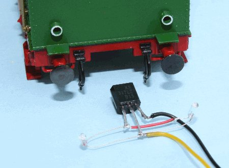
Der Spannungsregler wird vor dem Zusammenbau mit einem Tropfen Sekundenkleber von innen angebracht. - Fehlt noch der gemeinsame blaue Anschluß am verwendeten Decoder: eine Anleitung hierfür gab es auf der Seite des Dekoderherstellers.
- vorne
;){kind=link}
;){kind=link}
siehe auch:
wü T3 (BR 89.3-4)
Fahrzeug: 950, Brawa #600=, DC=, Schnittstellenstecker nach NEM 652
Decoder: ESU Lok Pilot 3 21mtc (52614)
Umbaubeschreibung
Es gibt keine Umbaubeschreibung: ich habe das Fahrzeug gebraucht erworben - mit eingebautem Lok Pilot 3 21mtc.Vorbildinformationen
- Werner Willhaus: Die Baureihe 893-4 - Die württembergische T3, Eisenbahn-Kurier Verlag 2001
- Albert Gieseler
wü Tn (BR 94.1)
Fahrzeug: 1008, Brawa #40300, DC=, Schnittstellenstecker nach NEM 660 (21MTC)
Decoder: Kuehn T125
Umbaubeschreibung
- Das Fahrzeug ist mit einer Schnittstelle nach NEM 660 (21MTC) ausgerüstet. Der Decoder wird anstelle des Brückensteckers eingesetzt.
Vorbildinformationen
V36.4
Fahrzeug: V36 418, Lenz #30110, DC=, mit integriertem Decoder
Decoder: Lenz
Umbaubeschreibung
- Die Lok wird komplett mit integriertem Decoder geliefert - es gibt keine Umbaubeschreibung für den Decodereinbau.
-
Umbau der Kupplung auf das Kadee-System:
Angeregt durch den Artikel in der Miba-Spezial (s.u.) habe ich meine V36 auch mit der bei mir verwendeten Kadee-Kupplung versehen. Wie im Bericht, so habe auch ich eine einfache starre Kadee-Kupplung anstelle einer Metall-Kupplung mit Entkupplungsbügel verwendet.
Der Grund: die Kupplung wird durch eine kleines Gegengewicht waagerecht gehalten. Während des Kuppelns/Entkuppelns wird dieses Gewicht magnetisch nach oben gezogen - der Haken geht nach unten, es wird entkuppelt. Ist nun die Kadee-Kupplung zu "schwer", kommt die Kupplung durch ein zu geringes Gegengewicht nicht mehr in die waagerechte Position (Bild) .
.
Abhilfe schafft hier ein kleines Messingplättchen (6 * 6 * 0,4mm; es ist auszuprobieren, ob und welche Größe erforderlich ist), das zusätzlich mit Sekundenkleber auf das Gegengewicht geklebt wird. Zusätzlich ist an diesen Stellen das Gehäuse etwas auszufräsen, um Platz für das Messingplättchen zu schaffen.
Weiterhin ist der Kadee-Kupplungskopf nicht nur so flach wie mäglich zu feilen, ggf. ist auch die Klaue seitlich und am Kopf so zu befeilen, dass ein einwandfreise Kuppeln bzw. Entkuppeln möglich ist.
;){kind=link}
weitere Umbaumöglichkeiten:
- Umbau der Kupplung: Miba-Spezial 59 S50..51: Neue KK-Köpfe braucht das Land
- Umbau der Kupplung: Kadee und Lenz Köf
Vorbildinformationen
- Stefan Lauscher: Die Diesellokomotiven der Wehrmacht, Eisenbahn-Kurier Verlag 1999
- http://v36.de/
- Rangierdiesel
V60
Fahrzeug: V60 423, Roco #43620, DC=, ohne Schnittstellenstecker
Decoder: Zimo MX617
Umbaubeschreibung
Das Fahrzeug wurde gebraucht erworben, ohne Verpackung, Anleitung oder Zurüstbeutel. So fehlten dann auch (fast) alle Griffstangen. Der originale Zurüstbeutel (95712) ist bei Roco nicht mehr erhältlich, der einzig verfügbare Zurüstbeutel (131259) gehörte zu eine V60 der Bocholter Eisenbahn - mit grauen Griffstangen.Was der Lok altroten Lok jetzt so schlecht auch nicht steht...
Zum eigentlichen Umbau:
- am Gewicht muss eine Ausfräsung vorgenommen werden, um Platz für den ZIMO-Decoder zu schaffen (Bild)

- von der Platine werden die beiden Dioden entfernt und es sind die Leiterbahnen an drei Stellen zu unterbrechen
- der Decoder wird wie gezeigt angeschlossen (Bild)

- weiterhin vorgesehen war:
- eine vorbildgerechte wechselnde Stirn/Schlußbeleuchtung
- eine Führerstandsbeleuchtung
- eine Triebwerksbeleuchtung
;){kind=link}
;){kind=link}
Vorbildinformationen
- Arno Bretschneider; Manfred Traube: Die Baureihe V60 - Das Arbeitstier der DB, Eisenbahn-Kurier Verlag 1997
- Andreas Christopher: Deutsche Kleinlokomotiven - Geschichte und Verbleib der Staatsbahn-Rangierlokomotiven der Leistungsgruppen I-II-II-V60, Verlag Kenning 1989
- Andreas Christopher: Kleinlokomotiven deutscher Staatsbahnen, Lg I, II, II, V15, V23, V60 - Lieferung und Verbleib, Drehscheibe-Verlag Sonderheft 19 2000
- Rangierdiesel
siehe auch:
V100.10
Fahrzeug: V100 1088, Roco #43644, DC=, ohne Schnittstellenstecker
Decoder: Kuehn N025
Umbaubeschreibung
Will man den freien Durchblick durch den Führerstand erhalten, bleibt nur etwas Platz für den Decoder im langen Vorbau direkt hinter den Glühlämpchen.-
Es war einmal (...oder der erste Decoder...): Tams LD-G-7
Hierzu ist am Gehäuse der Trennsteg zwischen den Lämpchen etwas zu kürzen sowie die Deckelplatte am Abgasstutzen zu entfernen (Bild).
- Weiterhin ist die Platine umzubauen:
- die 4 Dioden und die Funkentstörelemente sind zu entfernen (Bild 1)
- an den angebenen Stellen sind die Leiterbahnen aufzutrennen, der Anschluß vom vorderen Drehgestell rechts ist zu versetzen (Bild 2)
(Bild 2)
- die Lämpchen sind neu zu verdrahten, die Federkontakte an den vorderen Lämpchen sind jeweils durch einen dünnen Draht zu ersetzen (Bild 3)
(Bild 3)
- der Decoder ist gemäßBild 2 und Bild 3 anzuschließen.
- damit die Platine massefrei befestigt wird, sind die Befestigungsschrauben zu versetzen (Bild 2)
- Weiterhin ist die Platine umzubauen:
-
Der zweite Versuch: Kuehn N025
Abgestellt auf einem Nebengleis und keiner weiß, wie es geschah: der Tams-Decoder gab Rauchzeichen von sich und verabschiedete sich.
Da auch die Platine in Mitleidenschaft gezogen wurde, wurden hier sogleich Nägel mit Köpfen gemacht:- Einsatz eines kleineren Decoders
- Ersatz der Lämpchen durch wartungsfreie LED's:
- Led weiss = Reichelt LED 3-2000WS, Vorwiderstand 2,7kOhm
- Led rot = Reichelt LED 3-3500RT, Vorwiderstand 2,7kOhm
Bild 4
Von A.Huebsch wurde zwischenzeitlich eine Tauschplatine entwickelt. - vorbildgerechte wechselnde Stirn/Schlußbeleuchtung
;){kind=link}
;){kind=link}
;){kind=link}
;){kind=link}
;){kind=link}
weitere Umbaumöglichkeiten:
-
Anbau eines Schneeräumers, z.B. von Krüger-Modellbau H0 98211.02
Eisenbahn-Kurier 08/06 (Seite 116 und 117): Schneeräumer für die V100 - Die Firma Krüger-Modellbau bietet unter den Nummern H0 98211.?? zahlreiche Zurüst- und Umbaumöglichkieten für eine V100 an.
Vorbildinformationen
- Peter Große, Josef Högemann: Die Baureihe V100 - Generationswechsel bei der Deutschen Bundesbahn, Eisenbahn-Kurier Verlag 2005
- Manfred Weisbrod, Horst J. Obermayer: Die V100 DB und DR, Eisenbahn-Journal Spezial 7/1995
- https://www.v100.de/
siehe auch:
V188
Fahrzeug: V188 001a+b, Lima #208113L, DC=, ohne Schnittstellenstecker
Decoder: Tams LD-G-7
Umbaubeschreibung
- Platz für den Einbau des Decoders findet sich im Lokteil b, wenn dort kein zweiter Antrieb montiert wurde.
Vorteil: viel Platz
Nachteil: es sind zusätzliche Drahtverbindungen vom B-Teil in den A-Teil zu verlegen. - Ich habe für meinen Umbau Platz im A-Teil gesucht (und gefunden), um vier weitere Verbindungen von A- und B-Teil zu vermeiden.
Um Platz für den Decoder zu schaffen, ist jedoch das Balastgewicht, in dem auch der Motor lagert, zu kürzen. Das hintere Ende wird um ca. 7mm gekürzt um Platz für den Decoder zu schaffen.(Bild)
Zwischen Balastgewicht und Decoder ist eine Isolierung (z.B. Pappe) anzubringen.
Nicht vergessen: die Funkenstörelemente werden alle entfernt. - Die Lokräder haben eine Spurkranzhöhe von 1,5mm. Damit die Lok auch auf Gleisen mit Code83-Profile eingesetzt werden kann, sind die Spurkränze auf 1,1mm abzudrehen.
- Aktivieren des oberen Spitzenlichts
Bei meinem Modell ist das dritte obere Spitzenlicht nur eine Attrappe. Da zu diesem Spitzenicht auch kein Lichtleiter verlegt werden kann, kommt hier nur der Einbau einer Microlampe in Frage.
Passend zum direkten Anschluß an den DCC-Decoder sind z.B. Glühlampen mit 16V/20mA, Ø 1,8mm. Da diese Glühlampen aber zu heiß werden (mein Gehäuse wurde hierdurch verschmort) kann ich diese Art nicht empfehlen!
Beim Einsatz der Microlampen (1,2V/15mA, Ø 1,2mm [Conrad 720120]) muß jedoch eine Spannungsbegrenzung vorgenommen werden (
Schaltbild ,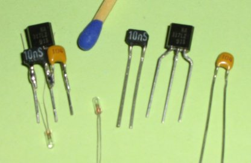
Zusammenbau ,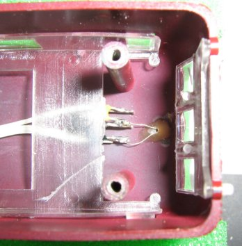
Einbau)
Bei der Verdrahtung ist unbedingt auf die Polarität am Decoder zu achten, d.h. der im Schaltbild als 'Masse' bezeichnete Anschluss ist mit dem Anschluss am Decoder zu verbinden, der auf Massepotential liegt. Dies ist nicht unbedingt der gemeinsame Anschluss für die Beleuchtung!
;){kind=link}
;){kind=link}
;){kind=link}
Vorbildinformationen
- Stefan Lauscher: Die Diesellokomotiven der Wehrmacht, Eisenbahn-Kurier Verlag 1999
- http://www.e94114.de
- Eisenbahnmagazin 05/23 (Seite 10ff): Diesel-Pärchen in Friedenseinsätzen
siehe auch:
- http://www.bahnwahn.de
- Eisenbahnmagazin 05/23 (Seite 18ff): Deutsche Doppellok in der Modellumschau
V200
Fahrzeug: V200 013, Roco #43522, DC=, ohne Schnittstellenstecker
Decoder: Kuehn T65
Umbaubeschreibung
Das etwas ältere Modell der V200 von Roco wird u.a. auch mit einem großen (ca. 30mm im Durchmesser) Motor geliefert. Hier gibt es zwei Bauarten:
|
- Bei der Auwahl des Decoders spielt neben dem verfügbaren Motorstrom auch die Anzahl der verfügbaren Funktionsausgänge eine wichtige Rolle.
Zusammen mit einer vorbildgerechten Lichtsteuerung und Führerstandsbeleuchtungen, sind sechs Funktionsausgänge erforderlich. N025 und N045 sind zu klein: also wurde ein T65 eingebaut.
Gemäß Decoderanleitung wurde die Entstörelemente nicht ausgebaut; es wurden nur die beiden Dioden für die (alte) Beleuchtung ausgelötet. - Vorbildgerechte wechselnde Stirn/Schlußbeleuchtung
Als Ersatz für die eingebauten Glühlampen werden vier LED's verwendet: zwei rote LED's (z.B. LS E67B von Reichelt, PLCC-4-Gehäuse, Vorwiderstand jeweils 470Ohm) und zwei weisse LED's (z.B. LCW E6SG von Reichelt, PLCC-4-Gehäuse, Vorwiderstand jeweils 1kOhm).
Jede LED wird mit ihrem Vorwiderstand auf ein kleines Stückchen Platine gelötet (Bild),
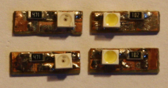
anschließend wird jeweils eine rote und eine weisse LED Rücken an Rücken zusammengeklebt und anstelle der (zuvor ausgebauten) Glühlampe eingesetzt.
Wichtigste und zugleich schwierigste Aufgabe ist jetzt: alles lichtdicht wieder zusammenzubauen. Hier helfen einige Streifen schwarzes Isolierband und zurecht geschnittenes schwarzes Moosgummi.
Indes der Führerstand wehrt sich hartnäckig: durch die (verkorkste) Lichtleiterführung für das dritte obere Spitzenlicht ist der Führerstand immer minimal beleuchtet - da muss ich jetzt mit Leben (bis ich eine neue Idee hierzu habe...). - Führerstandsbeleuchtung:
Verwendet wurden zwei SMD-LED's (Bauform 0603) jeweils mit einem Vorwiderstand 10k. Der Anschluß an den Decoder erfolgte über 2-polige Steckverbinder.
;){kind=link}
Vorbildinformationen
- Matthias Maier: Die Baureihe V200 - Die erste Großdiesellokomotive der Deutschen Bundesbahn, Eisenbahn-Kurier Verlag 2005
- Horst J. Obermayer: Die Baureihe V200 - 40 Jahre deutsche Großdiesellokomotiven, Eisenbahn-Journal Spezial 5/1993
- Konrad Koschinski: V200 - DB Baureihen V2000, V2001 und V300, Eisenbahn-Journal Extra 1/2011
siehe auch:
- http://www.ralf-bueker.de
- Digitale Modellbahn 3/2014 (Seite 38 und 39): Revitalisiert: V200 von Roco remotorisiert und digitalisiert
Köf II
Fahrzeug: 322 156-1, Brawa #460=, DC=, ohne Schnittstellenstecker
Decoder: Lenz LE0511D
Umbaubeschreibung
- Beim Umbau meiner Köf II habe ich mich an die Anleitung von Reinhard Müller (s.u.) gepaart mit den Bildern von Hans-Peter Pfeiffer (s.u.) gehalten.
Der von mir verwendete Decoder entspricht den Abmessungen der in den Umbauanleitungen verwendeten Decoder. Somit gibt es eigentlich nichts, was hier noch berichtet werden kann. - Den ledernen Türvorhang habe ich aus braunem Krepppapier hergestellt, die dem Modell beiliegenden Kunststoffeinsätze gefielen mir nicht.
weitere Umbaumöglichkeiten:
- Anbau eines Schneepflugs, z.B. Brawa H0 0475
Vorbildinformationen
- Andreas Christopher: Deutsche Kleinlokomotiven - Geschichte und Verbleib der Staatsbahn-Rangierlokomotiven der Leistungsgruppen I-II-II-V60, Verlag Kenning 1989
- Andreas Christopher: Kleinlokomotiven deutscher Staatsbahnen, Lg I, II, II, V15, V23, V60 - Lieferung und Verbleib, Drehscheibe-Verlag Sonderheft 19 2000
- https://www.deutsche-kleinloks.de
siehe auch:
- http://www.dcc-mueller.de
- Digitale Modellbahn 4/22 S46..48: Umbau-Klassiker: Remotorisierung und Erleuchtung einer Brawa-Köf
Klv 12
Fahrzeug: Klv 12-4823, Brekina #63040, DC=, integrierter Decoder
Decoder: integriert, entspricht Uhlenbrock 76320
Umbaubeschreibung
keine, der Decoder ist bereits werksseitig eingebaut.Vorbildinformationen
- Stefan John: Vom Schienenfahrrad zum Turmtriebwagen - Deutsche Draisinen Sammlung, DDS 1991
Klv 20
Fahrzeug: Klv 20-5010, Brekina #63030, DC=, Schnittstellenstecker nach NEM 652
Decoder: Kuehn N025
Umbaubeschreibung
- Im Klv20 ist nur sehr wenig Platz zur Unterbringung eines Decoders, der Kuehndecoder passt hier soeben liegend auf die Sitzbank.
Trotzdem gibt es einige Einbaumöglichkeiten:
- Schnittstellenbuchse auslöten und den Decoder direkt an die Motorplatine anlöten
- den Decoder an die Schnittstellenbuchse anlöten
- mit ganz kurzen Drähten den Decoder an einen Schnittstellenstecker anlöten (=meine Lösung)
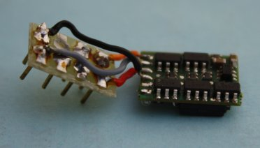
Das Ganze sieht dannso aus.
so aus: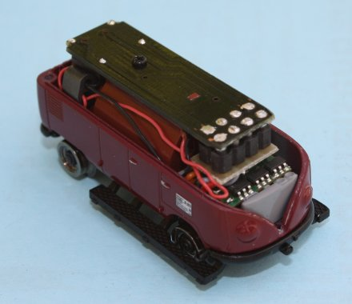
Die vier benötigten Drähte (rot, schwarz, orange, grau) wurden auf die notwendige Länge gekürzt, die nicht benötigten Drähte (weiß, gelb) direkt am Decoder abgelötet/entfernt.
;){kind=link}
;){kind=link}
Vorbildinformationen
- Stefan John: Vom Schienenfahrrad zum Turmtriebwagen - Deutsche Draisinen Sammlung, DDS 1991
Klv 51
Fahrzeug: Klv 51-9234, Brawa #456, DC=, ohne Schnittstellenstecker
Decoder: Kuehn N025
Umbaubeschreibung
- Im 'Bauch' unter der Ladefläche des Klv51 ist genügend Platz, um den Decoder vor der Hinterachse anzubringen.
Die vier benötigten Drähte (rot, schwarz, orange, grau) wurden auf die notwendige Länge gekürzt, die nicht benötigten Drähte (weiß, gelb) direkt am Decoder abgelötet/entfernt.
Vorbildinformationen
- Stefan John: Vom Schienenfahrrad zum Turmtriebwagen - Deutsche Draisinen Sammlung, DDS 1991
Klv 60
Fahrzeug: Klv 60-9001, Brawa #520, DC=, ohne Schnittstellenstecker
Decoder: Zimo MX617
Umbaubeschreibung
Tatsächlich hat mein gebraucht erworbener Klv- keine Platine
- und somit auch keine Glühlampen (weder weiss noch rot)
- dafür aber zumindest die beiden Lichtleiter
- Damit für den Deodereinbau die Radschleifer vom Motor getrennt werden, habe ich auf beiden Seiten einen hauchdünne Kunststoffstreifen zur Trennung zwischen Radschleiferblech und Motoranschluss geschoben.
An der Innenseite (also zum Motoranschluss hin) wurde ein Kontaktstreifen aus Federbronze auf den Kunststoffstreifen geklebt (Bild)
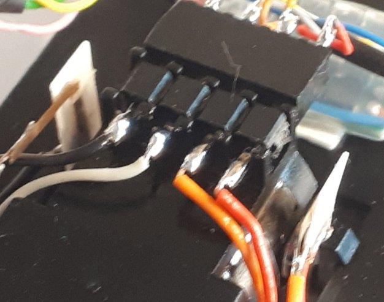
. -
Der Einbauaufwand für das Spitzensignal hängt massgeblich von den verwendeten LEDs ab.
Einige Tests haben dann ergeben, das Tower-LEDs aufgrund der Bautiefe nicht passen - hier sind bei mir die Sitzbänke im Weg.
Statt dessen habe ich DUO-LEDs (rot/weiß) der Baugröße 0605 verwendet und diese Rücken an Rücken in die Lichtleiterlücke geklebt (Bild)
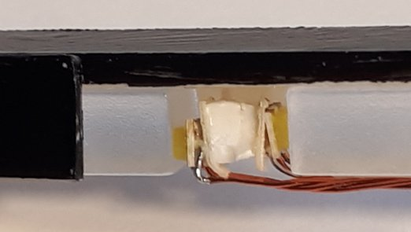
.
Da ich das in den 60er-Jahren für Dienstfahrzeuge übliche vereinfachte Zugschlußsignal Zg4 anzeigen möchte, wird an der in Fahrtlichtung links liegenden LED der Draht für rot an der DUO-LED nicht angeschlossen. Die DUO-LEDs jeweils einer Fahrtrichtung werden zusammengeschaltet (Bild)
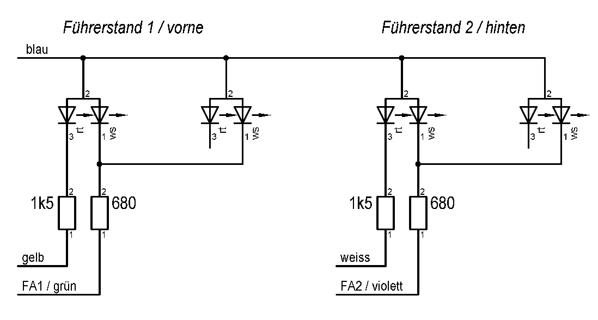
. - vorbildgerechte wechselnde Stirn/Schlußbeleuchtung
-
Für die Innenbeleuchtung habe ich ein Reststück einer Wagenbeleuchtung verwendet, diese hatte bereits einen LED mit Vorwiderstand auf der Platine. Die Platine wurde in der Länge auf das Innenmaß des Wagenkastens gekürzt
(Bild)
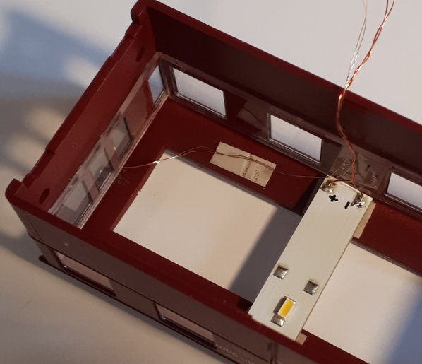
.
-
Für das Licht über dem Führerstand 2 wurde eine Weinertlaterne (9016) eingebaut.
Diese Laterne erhält zunächst ein Loch (Ø 0,5mm) zur Kabeldurchführung. Für die Lampe wurde eine weisse LED der Baugröße 0402 verwendet, die zusammen mit dem Frontglas der Laterne mit Sekundenkleber eingeklebt wurde
(Bild)
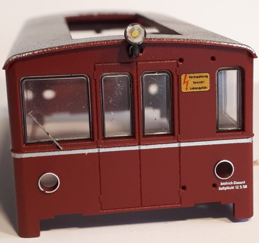
.
Die Frage um das dritte Spitzenlicht wird im Heft Digitale Modellbahn 3/24 S54..57 beantwortet:
Das Fahrzeug ist Baujahr 1954 und das dritte Spitzenlicht wurde bei der DB erste 1956 eingeführt. Es ist daher anzunehmen, dass es sich um eine Arbeitsleuchte handelt, zumal sich an dieser Fahrzeugseite eine Türe, eine Klapptreppe und die Leiter für den Dachaufstieg befindet. -
Um der Aufstiegsleiter zur Bühne den Messingglanz zu nehmen, wurde diese brüniert.
;){kind=link}
;){kind=link}
;){kind=link}
;){kind=link}
;){kind=link}
Vorbildinformationen
- Stefan John: Vom Schienenfahrrad zum Turmtriebwagen - Deutsche Draisinen Sammlung, DDS 1991
siehe auch:
- Digitale Modellbahn 3/24 S54..57: Bühnenreif Brawas Klv60 mit Sound, Beleuchtungseffekten und freiem Durchblick
- Stummiforum: Elektrik eines Brawa KLV
- Drehscheibe-Online: Umbau - Brawa Klv 60-9001 Turmtriebwagen mit Sound [1 Video]
- Modellbauhütte
- Eisenbahn-Magazin 3/24, S56..57: Vorkriegswagen für die Oberleitungsinstandhaltung DB-Baureihe 703
- Eisenbahn-Magazin 4/24, S44..45: Kompakte Turmwagen für die Fahrleitungsmeistereien Klv 60 und 61 der DB
- Eisenbahn-Magazin 5/24, S52..54: Die Regelturmtriebwagen mit der Schwenkbühne und der Leiter DB-Baureihen 701/702
- Eisenbahn-Magazin 6/24, S42..43: Fünf Vierachser als schnelle Einsatzfahrzeuge DB-Baureihen 704
- Eisenbahn-Magazin 7/24, S55: Rollendes Unikat für Tunneluntersuchungen DB-Baureihen 705
ASF 1
Fahrzeug: ASF 1, Selbstbau, DC=, ohne Schnittstelle
Decoder: Kuehn N045
Einbaubeschreibung
- der Decoder wurde am Getriebeblock montiert. Die vier benötigten Drähte (rot, schwarz, orange, grau) wurden auf die notwendige Länge gekürzt, die nicht benötigten Drähte (weiß, gelb) direkt am Decoder abgelötet/entfernt.
Vorbildinformationen
DH500Ca
Fahrzeug: Thyssen 2, Hobbytrade #155001, DC=, Schnittstellenstecker nach NEM 660 (21MTC)
Decoder: Kuehn T125
Umbaubeschreibung
- Das Fahrzeug ist mit einer Schnittstelle nach NEM 660 (21MTC) ausgerüstet. Der Decoder wird anstelle des Brückensteckers eingesetzt.
Hinweise: Hobbytrade empfiehlt den Einsatz seines Decoders HT75332.
Es kann eigentlich jeder Decoder mit 21MTC-Schnittstelle verwendet werden.
Weiterhin sind für eine vorbildgerechte Lichtsteuerung die entsprechenden CVs des Decoders anzupassen (an AUX1 ist Zg2 vorn, an AUX2 ist Zg2 hinten angeschlossen).
Vorbildinformationen
ETA 150
Fahrzeug: ETA 150 553, Kato #30801, DC=, Schnittstellenstecker nach NEM 652
Fahrzeug: ESA 150 106, Kato #30801, DC=, kein Schnittstellenstecker
Umbaubeschreibung
- Platz für den Decoder findet sich in der Batteriewanne unterhalb der Platine
- Decoder schräg liegend einbauen
- Platine mit Isolierband von unten abkleben
- Anschlußdrähte zum Decoder sind zu kürzen - Weiterhin werden die vorhandenen Funkentstörelemente von der Platine entfernt und der Motor direkt an der Platine angeschlossen.
- es empfiehlt sich die Verwendung eines hochfrequenten Decoders (Tams LD-G-7 erzeugte störende Motorgeräusche)
- Beseitigung möglicher Kontaktprobleme
Die Radsätze sind geteilt und lagern in Achslagern aus Messingblech. Die Messingbleche haben oben einen Zapfen, der gegen ein Bronzeblech drückt, das durch den gesamten Triebwagen verläuft. Auf diese Bleche drückt von der Platine jeweils ein Federdraht. Die Motorkontakte sind entsprechend.
Zur Verbesserung der Stromabnahme wird direkt an die Messingblechzapfen der Drehgestelle je ein roter Draht für die in Fahrtrichtung rechte Stromabnahme und je ein schwarzer Draht für die linke Stromabnahme angelötet. Nach Einbau der Drehgestelle werden diese Drähte direkt an die Platine angelötet, die Bronzestreifen können dann entfallen.
-
vorbildgerechte wechselnde Stirn/Schlußbeleuchtung
Hierzu sind einige Umbauten auf der
Platine erforderlich:
Platine erforderlich:

- der Widerstand 270 Ohm ist durch eine Drahtbrücke zu ersetzen
- die Leiterbahnen zu den LEDs sind zu unterbrechen, die Unterbrechung ist jeweils durch einen Widerstand 560 Ohm zu ersetzen
- die gelbe(weisse) LED vorn wird mit dem grünen Draht des Decoders verbunden
- die gelbe(weisse) LED hinten wird mit dem violetten Draht des Decoders verbunden
-
Der Umbau des Steuerwagens erfolgt gemäß den Ideen, die ich im Newsletter#19 beschrieben habe.
Hierzu sind einige Umbauten auf der Platine erforderlich, das sieht dann wie folgt aus:- der Widerstand 270 Ohm wird entfernt
- die Leiterbahnen zm Schleppschalter werden unterbrechen, der Schleppschalter stillgelegt
Zur Verbesserung der Stromabnahme wird direkt an die Messingblechzapfen der Drehgestelle je ein roter Draht für die in Fahrtrichtung rechte Stromabnahme und je ein schwarzer Draht für die linke Stromabnahme angelötet. Nach Einbau der Drehgestelle werden diese Drähte direkt an die Platine angelötet, die Bronzestreifen können dann entfallen. - die gelbe(weisse) LED wird um 180° gedreht eingelötet
- für die Innenebleuchtung wird die Lichtleiste LH10 von Kuehn verwendet, hieran werden auch die beiden LEDs angeschlossen
- die Verbindung der Lichtleiste mit der Fahrzeugplatine erfolgt über einen Mehrfachstecker.
-
Da wir gerade die Platine umbauen: die jeweils gelben LED's können durch jeweils weisse LED ersetzt werden (LED z.B. Reichelt LED 3-2000WS mit Vorwiderstand 2,7kOhm)
(Bei diesem Umbau bitte den Steuerwagen nicht vergessen...) -
Wer möchte, kann den Innenraum farblich gestalten:
- Wände und Führerstandspult: hellbraun [RAL1011]
- Boden: dunkelgrau [RAL7024]
- Sitze 2. Klasse: rotbraun [RAL3009]
- Sitze 1. Klasse: grün [RAL6003]
- Leider fehlt dem Lenz-Decoder ein fünfter Funktionsausgang zur Ansteuerung einer Innenbeleuchtung.
Daher habe ich den LE1835 gegen den N045-P8 von Kuehn getauscht.
Der Funktionsausgang E (Achtung: nicht belastbar, da nur ein Logikausgang) schaltet jetzt über einen zusätzlichen Transistor eine LED-Lichtleiste von Malutronik (WB ad 230mm warmweiß), diese wurde auf eine Länge von 195mm gekürzt.
;){kind=link}
Vorbildinformationen
- Dr. Franz Rittig: Akkutriebwagen, Eisenbahn-Journal Sonderausgabe 3/2006
- Andreas Dessel: Mit 440 Volt durch Ruhrpott und Rheinland, Drehscheibe-Verlag Sonderheft 15, 1992
- Die Zeit der Akkutriebwagen
- ETA-Unterhaltung im Bw Worms
- Wormser ETA-Herbst
siehe auch:
ETA 180
Fahrzeug: ETA 180 015 a+b, Liliput #177 89, DC=, ohne Schnittstellenstecker
Decoder: Lenz Gold mini
Umbaubeschreibung
- Den Triebwagen habe ich gebraucht mit bereits eingebautem Decoder gekauft - es gibt keine Umbaubeschreibung.
Fahrzeug: ETA 180 016 a+b, Liliput #177 03, DC=, ohne Schnittstellenstecker
Decoder: Rautenhaus SLX871
Umbaubeschreibung
- Vom Schrottfahrzeug zum rollfähigen Dummy - Restaurierung des ETA 180 016.pdf
Vorbildinformationen
- Horst Troche: Die Akkumulator-Triebwagen der Preußisch-Hessischen Staatseisenbahnen und der Deutschen Reichsbahngesellschaft (DB-Baureihen ETA 177 bis 180), Eisenbahn-Kurier Verlag 1997
- Dr. Franz Rittig: Akkutriebwagen, Eisenbahn-Journal Sonderausgabe 3/2006
DW 8 (Kittel, grün)
Fahrzeug: DW8, Rai-Mo #1020, DC=, ohne Schnittstellenstecker
Decoder: Lenz LE1014E
Vorbildinformationen
- Dieser Bausatz entspricht einem Kittel-Dampftriebwagen, der für die Bad.St.B. beschafft wurde.
DW 8 (Kittel, braun)
Fahrzeug: DW8, Trix 22485, DC=, ohne Schnittstellenstecker
Decoder: Kuehn N045
Umbaubeschreibung
- Platz für den Decoder findet sich im vorderen Gepäckkasten unterhalb der Motorwelle zur Hinterachse.
- Die vorhandenen Funkentstörelemente werden von der Platine entfernt.
- Die eingebaute Platine (bei mir mit der Kennung '13-3272-') muss angepasst werden:
- zur Durchführung der Kabel vom Dekoder wird an Stelle der drei Lötanschlüsse eine (längliche) Bohrung eingebracht, die Lötanschlüsse werden nicht weiter benötigt.
- es müssen sieben Unterbrechungen vorgenommen werden (sofern nicht bereits vorhanden, violette Markierungen).
- die Anschlüsse vom Decoder werden in etwa da angebracht, wo im Bild die farbigen Markierungen (Punkte) sind. -
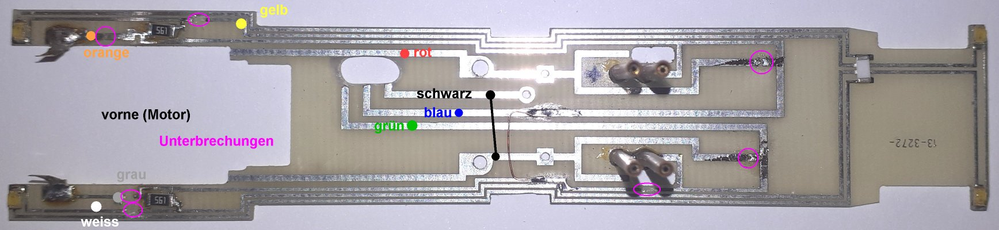
Platine
Weiterhin habe ich die Glühlampen für die Innenraumbeleuchtung gegen LEDs getauscht (warmweiss, Vorwiderstand 10 kOhm).
;){kind=link}
- die beiden Widerstände links und rechts am Motor (270 Ohm) werden gegen Widerstände mit 560 Ohm getauscht.
- damit die Sitzbankeinsatz wieder plan auf die Platine gelegt werden kann, ist im Bereich der neuen Platinenbohrung der Boden in Richtung Motor für die Decoderkabel von unten vorsichtig ca. 0,5mm dünner zu fräsen. Für (zusätzliche) Verbindungen ist bevorzugt Kupferlackdraht zu verwenden.
Vorbildinformationen
- Dieser Fahrzeug entspricht einem Kittel-Dampftriebwagen, der für die K.wü.St.E. beschafft wurde.
- Werner Willhaus: Kittel-Dampftriebwagen - Innovation des Nahverkehrs vor 100 Jahren, Eisenbahn-Kurier Verlag 2008
siehe auch:
SVT877
Fahrzeug: SVT877a+b, Kato #30701, DC=, ohne Schnittstellenstecker
Decoder: Lenz LE1035A
Umbaubeschreibung
- Bei meiner Ausführung des SVT877 fingen die Probleme bereits beim Öffnen des Gehäuse an: nirgendwo waren Rastnasen, Schrauben oder ähnliches zu erkennen.
Erst eine Nachfrage beim Hersteller brachte die Lösung:
- zunächst ist das Dach gemäß der Bedienungsanleitung zum Einbau einer Innenbeleuchtung zu öffnen
- anschließend kann durch vorsichtiges Drücken des Gehäuses von innen nach aussen das Gehäuse vom Fahrgestell getrennt werden; wo die insgesamt 16 Rastnasen liegen, zeigt zudem diesesBild.Bild: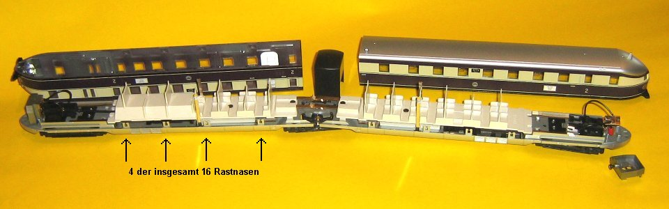
- Platz für den Decodereinbau findet sich im B-Teil (Motorwagen) des Triebzuges unter der Innenraumnachbildung. Hierzu muß jedoch bei der Innenraumnachbildung ein Teil entfernt werden (Bild).
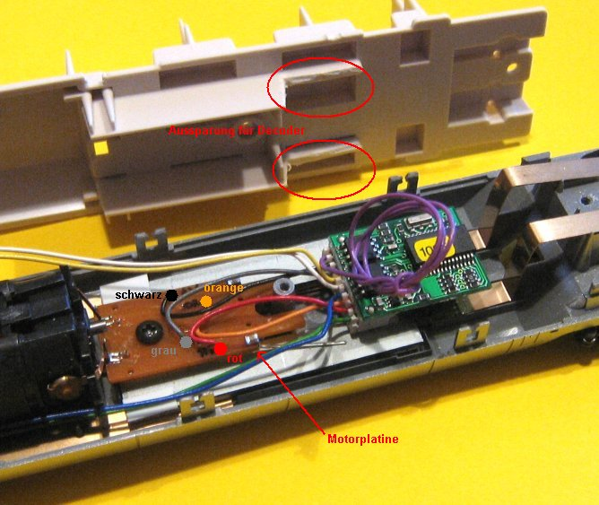
- von der Motorplatine werden die drei Entstörelemente entfernt, in den zugehörigen Platinenlöchern kann dann der Decoder direkt angelötet werden (siehe Bild).
Der Decoder selbst wird mit dem doppelseitigen Klebeband an den Balastgewichten befestigt. - Die Front- bzw. Stirnbeleuchtung (Bild)
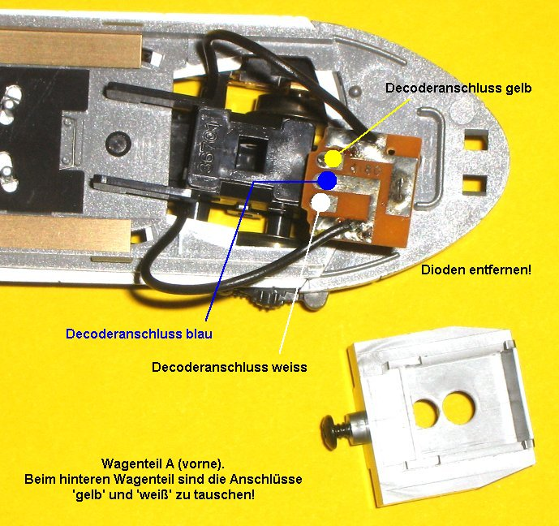
wird über ein Stück Flachbandkabel von den Wagenenden zum Decoder geführt. Es ist darauf zu achten, das das Kabel nach oben weg geführt wird, um die Drehbewegung des Fahrgestelles nicht zu beeinträchtigen (Bild)!!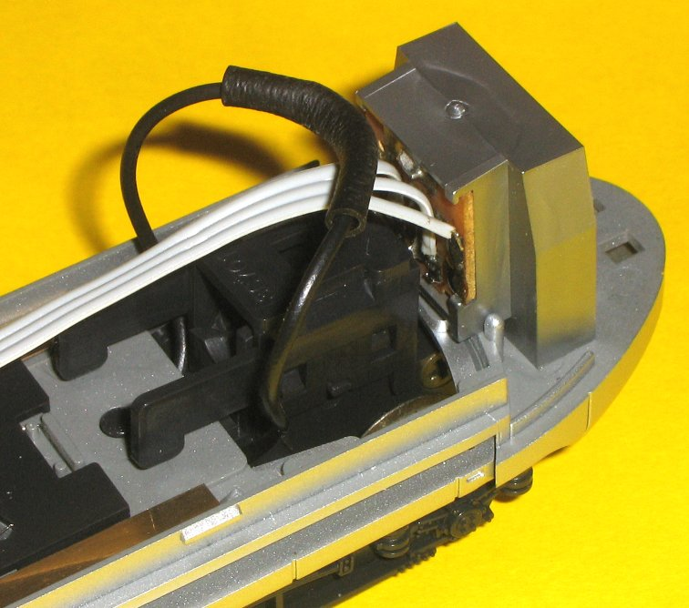
Nicht vergessen: die Dioden sind unbedingt auszulöten! - Einen weiteren freien Ausgang des Decoders habe ich mit den Anschlüssen zur Innenbeleuchtung verbunden, damit diese mit einer Funktionstaste geschaltet werden kann.
Hierzu ist es unbedingt erforderlich, dass die seitlichen Kontakte vom Balastgewicht (das mit den Drehgestellkontakten verbunden ist) elektrisch getrennt werden. Hierzu habe ich eine hauchdünne Kunststoffplatte zwischen Kontakt und Balastgewicht geklebt und die Kontakte mit dem blauen bzw. grünen Decoderanschlussdraht verbunden (Bild).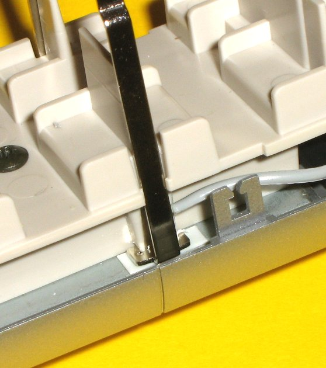
Zum Einsatz kamen insgesamt zwei LED-Lichtleisten von Malutronik (WB ad 230mm warmweiß), diese wurden auf eine Länge von 195mm gekürzt.
- Beseitigung möglicher Kontaktprobleme
Die Radsätze sind geteilt und lagern in Achslagern aus Messingblech. Die Messingbleche haben oben einen Zapfen, der gegen ein Bronzeblech drückt, das durch den gesamten Triebwagen verläuft. Auf diese Bleche drückt von der Platine jeweils ein Federdraht. Die Motorkontakte sind entsprechend.
Zur Verbesserung der Stromabnahme wird direkt an die Messingblechzapfen der Drehgestelle je ein roter Draht für die in Fahrtrichtung rechte Stromabnahme und je ein schwarzer Draht für die linke Stromabnahme angelötet. Nach Einbau der Drehgestelle werden diese Drähte direkt an die Platine angelötet, die Bronzestreifen können dann entfallen.
-
Wer möchte, kann den Innenraum gestalten:
- farblich:
- Wände: hellbraun [RAL1011]
- Boden: dunkelgrau [RAL7024]
- Sitze: rotbraun [RAL3009]
- und/oder durch Platzieren von Reisenden
- farblich:
;){kind=link}
;){kind=link}
;){kind=link}
;){kind=link}
;){kind=link}
Vorbildinformationen
- Heinz R. Kurz: Fliegende Züge - Vom "Fliegenden Hamburger" zum "Fliegenden Kölner", Eisenbahn-Kurier Verlag 1994
siehe auch:
VT70.9
Fahrzeug: VT70 937, Piko #6104, DC=, ohne Schnittstellenstecker
Decoder: Tams LD-G-8
Umbaubeschreibung
- Bereits vor langer Zeit habe ich den originalen Antrieb entfernt und durch den Umbausatz #2227 der Firma Verbeck ersetzt.
- Der Decoder findet bequem im Triebwagengehäuse Platz, wegen des Einfachheit verzichte ich an dieser Stelle auf Detailbeschreibungen bzw. Fotos.
- Weiterhin wurden die Fenster (Bakelit?) durch selbstgefräste Plexiglasscheibchen ersetzt und zahlreiche Zurüstteile von Weinert angebracht.
- vorbildgerechte wechselnde Stirn/Schlußbeleuchtung
Verwendet werden hier DUO-LEDs weiss/rot mit Ø 3mm, planer Oberfläche, gemeinsamer Anode und jeweils einem 10kOhm-Vorwiderstand.
weitere Umbaubeschreibungen:
- Eisenbahnmagazin 05/90 (Seite 81 bis 83): Renoviert: Piko VT70.9
- Miba 04/97 (Seite 48 bis 50): Ein betagtes Modell wird aufgemöbelt: Jungbrunnen für den VT70
Vorbildinformationen
- Heinz Kurz: Triebwagen der Deutschen Reichsbahn - Die Baureihen VT 133 bis VT 137, Eisenbahn-Kurier Verlag 2013
VT95.9 und VB140.7
Fahrzeug: VT95 902, Brekina #64404, DC=, Schnittstellenstecker nach NEM 652
Fahrzeug: VB140 701, Brekina #64434, DC=, Schnittstellenstecker nach NEM 652
Decoder: Kuehn N045
Umbaubeschreibung
- Eigentlich ist der Einbau recht einfach: die Dekoder mit dem Schnittstellenstecker nach NEM 652 werden anstelle der Blindstecker eingesteckt.
Doch ganz so einfach ist es nicht:
- zum Einen müssen die Kabel zum Schnittstellenstecker gekürzt werden
- zum Anderen soll es eine vorbildgerechte wechselnde Stirn/Schlußbeleuchtung geben
-
VT95 902
Am Kuehn-Dekoder N045 stehen insgesamt sechs Funktionsausgänge zur Verfügung, insgesamt also genügend für die benötigten Funktionen (Spitzenlicht zweimal ws, zweimal rot; Innenbeleuchtung).
Die Funktionsausgänge E und F werden auch für die SUSI-Schnittstelle verwendet, sind also nur Logikausgänge, die nur gering belastet werden können. Abhilfe schafft hier eine Transistorschaltung, die in SMD-Bauweise auf einer kleinen Zusatzplatine untergebracht wurde (Bild).: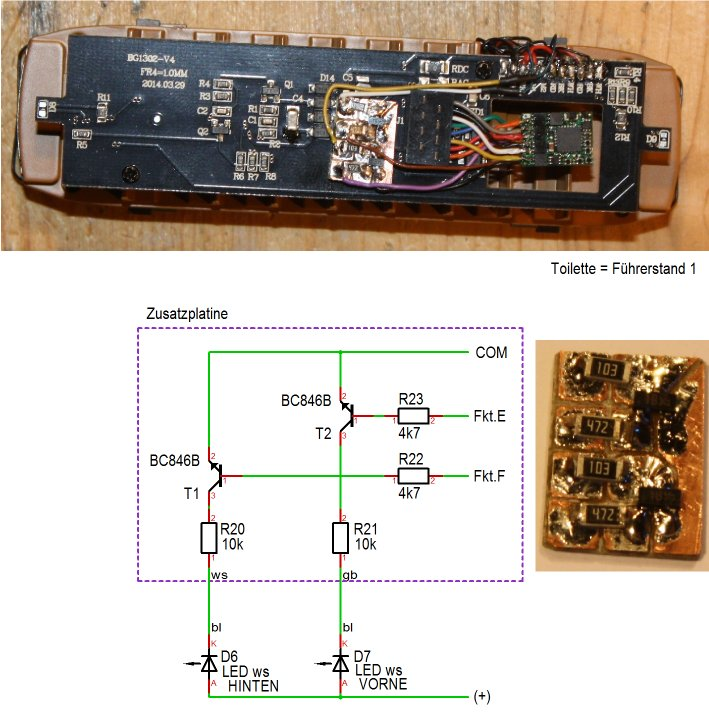
Die weissen LED's für das Spitzenlicht sind an der Brekina-Platine jeweils am Anschluss "WH" angelötet. Die beiden blauen Drähte werden abgelötet und jeweils an einen der Kollektoren der beiden Transistoren angeschlossen.
Nach dem Kürzen der Dekoderdrähte wird dieser einfach eingesetzt.
Beseitigung möglicher Kontaktprobleme
Hier wurde am Decoder ein Stützkondenstor angelötet (gemäß Anleitung in der Decoderbeschreibung).
-
VB140 701
Nach dem Kürzen der Dekoderdrähte wird dieser einfach eingesetzt. Der vorbildgerechte Lichtwechsel wird hier einfach durch richtiges Konfigurieren erreicht: jeder Ausgang (Licht vorne rot, Licht hinten rot, Innenbeleuchtung) wird über eine separate Funktionstaste angesteuert.
;){kind=link}
Vorbildinformationen
- J.-U. Ebel, J. Högemann, Dr. R. Löttgers: Schienenomnibusse aus Uerdingen - Band 1 Technik und Geschichte bei DB, Privatbahnen und im Ausland, Eisenbahn-Kurier Verlag 2001
- J.-U. Ebel, J. Högemann, Dr. R. Löttgers: Schienenomnibusse aus Uerdingen - Band 2 Einsatzgeschichte der Baureihen VT 95, VT 97 und VT 98, Eisenbahn-Kurier Verlag 2002
VT137 240
Fahrzeug: VT137 240, Liliput #112803, DC=, Schnittstellenstecker nach NEM 652
Decoder: Kuehn N045
Umbaubeschreibung
- Eigentlich ist der Einbau recht einfach: die Dekoder mit dem Schnittstellenstecker nach NEM 652 werden anstelle des Blindsteckers eingesteckt.
Aufgrund der etwas beengten Einbausituation müssen die Anschlußkabel gekürzt werden.
Weiterhin ist die vom Hersteller vorgesehene Aussparung von Metall umgeben, daher habe ich den Decoder mit schmalen Papierstreifen (passend zurechtgeschnitten) isoliert: der Decoder steckt jetzt zwischen den beiden Papierstreifen und kann das (Metall-)Gehäuse nicht mehr berühren.
Vorbildinformationen
- Heinz Kurz, Horst Troche: Gläserne Züge - Die Aussichtstriebwagen der Deutschen Reichsbahn, Eisenbahn-Kurier Verlag 2021
Schiene-Straße-Bus (BR 790)
Fahrzeug: DB29-3, Brekina #63010, DC=, Schnittstellenstecker nach NEM 652
Decoder: Kuehn N025
Umbaubeschreibung
- Um den freien Durchblick nicht zu verbauen - es sollen später ja auch noch Fahrgäste im Fahrzeug sitzen - wird der Decoder so flach wie möglich unter den herausnehmbaren Sitzen platziert.
Die vier benötigten Drähte (rot, schwarz, orange, grau) werden auf die notwendige Länge gekürzt und direkt an den Schnittstellenstecker angelötet, die nicht benötigten Drähte (weiß, gelb) direkt am Decoder abgelötet/entfernt.
Vorbildinformationen
- Eisenbahn-Magazin 2/21, S36..45: Ein Pionier in der Sackgasse
Triebwagen-Beiwagen VB147.0
Fahrzeug: VB147 002 Wt, Brawa #45248, DC=, ohne Schnittstellenstecker
Decoder: BFD-01
Umbaubeschreibung
- DasFahrzeug ist ohne Decoder nur für Gleichstrombetrieb zugelassen.
Für dein Einsatz unter DCC schreibt BRAWA als Decoder die Verwendung des BFD-01 vor (BRAWA Best.Nr. 0014766.01, Hersteller möglicherweise D&H), da der integrierte Lichtbaustein auf 5V-Basis arbeitet. Die Verwendung eines anderen Decoders erfordert weitere Umbaumassnahmen, z.B. Austauch von über 20 SMD-Widerständen.
Auf Grund der (auch unten in den Links) beschriebenen Schwierigkeiten (nicht Unmöglichkeiten!) habe ich mich entschlossen, das Fahrzeug direkt durch BRAWA digitalisieren zu lassen.
Fazit hierzu: preisgünstig und schnell.
Vorbildinformationen
- Heinz Kurz: Triebwagen der Deutschen Reichsbahn - Die Baureihen VT 133 bis VT 137, Eisenbahn-Kurier Verlag 2013
siehe auch:
- https://www.modellbahn.net/index.php/startseite/modellberichte/wagenmodelle/reisezugwagen/sitzwagen/361-vb-147-der-unbemerkt-gebliebene-brawa-befehlswagen
- https://www.modellbahn.net/index.php/startseite/modellberichte/lokomotiven/vb-147-brawa-dekodereinbau
- https://www.stummiforum.de/t134502f2-Fragen-zu-Brawa.html
- https://www.stummiforum.de/t128163f5-Digitalisieren-von-Brawa-VB.html
- https://www.h0-modellbahnforum.de/t337843f19606-Decoder-fuer-BRAWA-VB-und-Baugleiche.html
Triebwagen-Steuerwagen VS145.1
Fahrzeug: VS145 141, Liliput #322501, DC=, Schnittstellenstecker nach NEM 652
Decoder: Kuehn N045
Umbaubeschreibung
- Obwohl der Steuerwagen einen Schnittstellenstecker besitzt, wurde doch die Ansteuerung so geändert, das an beiden Wagenenden alle Signalbilder (Zg1 bzw. Zg2) vorbildgerecht einzeln geschaltet werden können, dazu werden insgesamt vier Funktionsausgänge benötigt.
Der nicht verwendbare Schnittstellenstecker wurde ausgelötet und die Stirnlampen gegen LED's mit Vorwiderstand ausgetauscht:
- Led weiss = Reichelt LED 3-2000WS, Vorwiderstand 2,7kOhm
- Led rot = Reichelt LED 3-3500RT, Vorwiderstand 2,7kOhm
Zur Ansteuerung der Innenbeleuchtung mit einem fünften Ausgang des Decoders ist ein zusätzlicher Transistor (BC337 mit Basisiwiderstand 4,7kOhm) erforderlich (Bild).: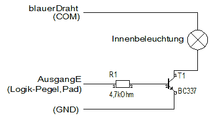
Nach dem Umbau sieht die Platine
;){kind=link}